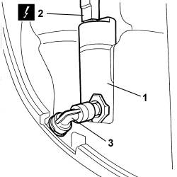

5050D20 HEADLAMP WASHER PUMP - R+R
- Path
- Procedures > 50 AUXILIARY UNITS > 5050 SCREEN WASHERS AND HEADLAMP WASH/WIPE > 5050D HEADLAMP WASH/WIPE > 5050D20 HEADLAMP WASHER PUMP - R+R
- Kind
- repair procedure (removal / refitting; the operation number is the code)
- Applies to
- engines: 1.3 JTD 16v; all production periods; only with equipment: SUV
- Interactive page
- https://sloeber94.github.io/elrnDB-fPnd/en/#/169002219
Applies to: engines: 1.3 JTD 16v; all production periods; only with equipment: SUV
 Removing
Removing
 Refitting
RefittingDisconnect the negative battery terminal.
Applies to: engines: 1.3 JTD 16v; all production periods; only with equipment: SUV
1. Undo the clip and disconnect the headlamp washer pipe
Collect the coolant in a suitable container.
2. Disconnect the electrical connection.
3. Remove the headlamp washer pump.
Applies to: engines: 1.3 JTD 16v; all production periods; only with equipment: SUV
Refitting
Removing1. Fit the headlamp washer pump in its housing.
2. Connect the electrical connection.
3. Connect the headlamp washer pipe and secure with the clip.

Applies to: engines: 1.3 JTD 16v; all production periods; only with equipment: SUV
Op. 5550C30 L/H OR R/H FRONT TURN SIGNAL (ONE) - R+R
Connect the negative battery terminal.